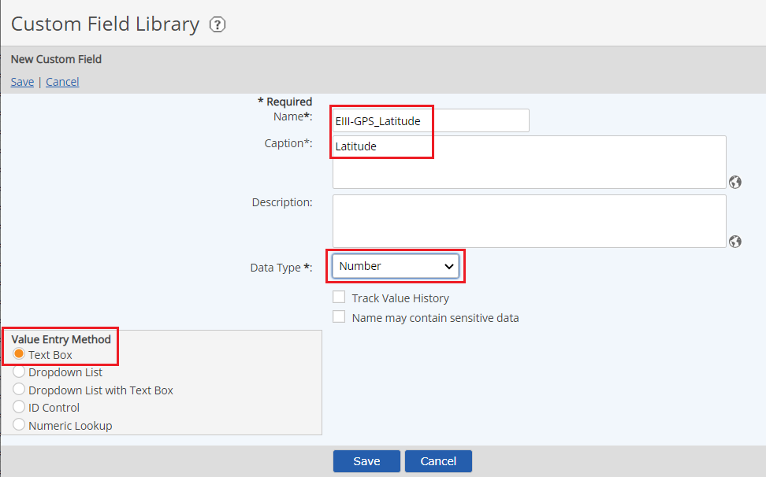

You may edit form templates to add or remove fields, change field validations, and re-order the fields. Before editing a form template, it is advisable to check the form dependencies to see on which workflow types it is used.
You can see all workflow types where the form template is used. Right click the template in the list and choose Show Dependencies. Additionally, the Process tab in the Workflow Type Editor shows the form templates associated with each step.
When you edit a form template that is associated with existing workflow instances, you will be required to create a new version.
Edit a Form Template
From the menu, select Setup > Form under Templates.
Right click the template in the Form Templates list and select Edit.
On the template form, make the desired changes.
To add a field, select Add. In the selection window, browse or use the search to find and select the fields to add to the template. Check the checkbox for the fields you want and click Select Fields.
To create a new custom field to add to the template, click Create New Custom Field. See Create/Edit Custom Fields. After the new field is created, you will be returned to the template edit screen. The new field will appear in the Selected Fields list.
To remove a field, select the field in the list and click Remove.
To change the display order of the fields, select a field and click the Up or Down button to change its position.
To apply a validation to a field, select the field in the list box. The possible validation types are shown below. Select the validations to apply and enter any required values. Fields with existing validations will be shown in blue. See Form Field Validations.
To edit the formula for a calculated field, click the Edit link for the field.
Select Save, then Confirm to save the template.
Saving Mode options:
Update Current Version: Updates the current version of the form template associated with workflow steps (default). No editing of the workflow type is required to apply changes to new workflow instances.
Create New Version: Creates a new version of the form template. To apply the new version to an existing workflow type you will need to edit the workflow type and re-select the template on the associated steps, then save the workflow as a new version. You may add optional version comments. See Versioning of Form Templates.
Copy and rename Form Templates
To copy a form template, do the following:
Right click the template and choose Copy.
Enter a name for the new template and click Save.
To rename a form template, do the following:
Right click the template and choose Rename.
Rename the template and click Save.
Add a GPS Coordinate Capture
From the menu, select Setup > Form under Templates.
Create two new custom fields, a latitude field and a longitude field, to add to the template. In each case, click New Custom Field.
Enter a Name for the field.
Enter a Caption for the field.
Add a Description if desired.
Select a Number from the drop-down list in the Data Type.
Select a Text Box from the Value Entry Method.
Select Save, then Confirm to save the new field.

After new fields are created, you will be returned to the template edit screen. The new fields appear in the Fields list of the Form Designer.